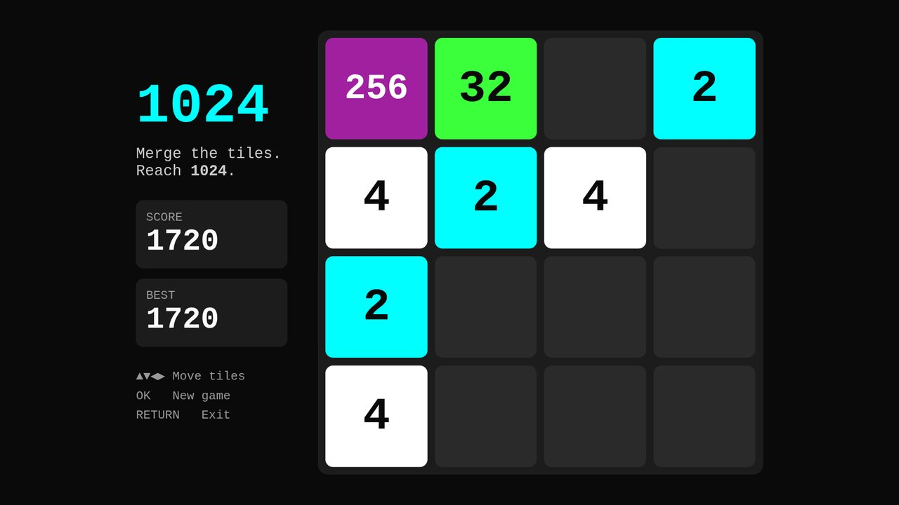
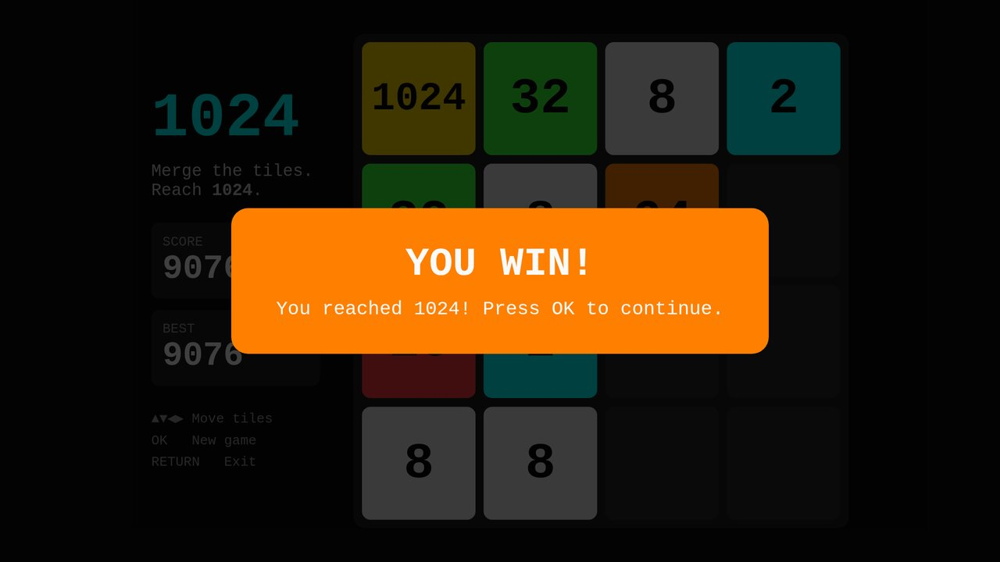
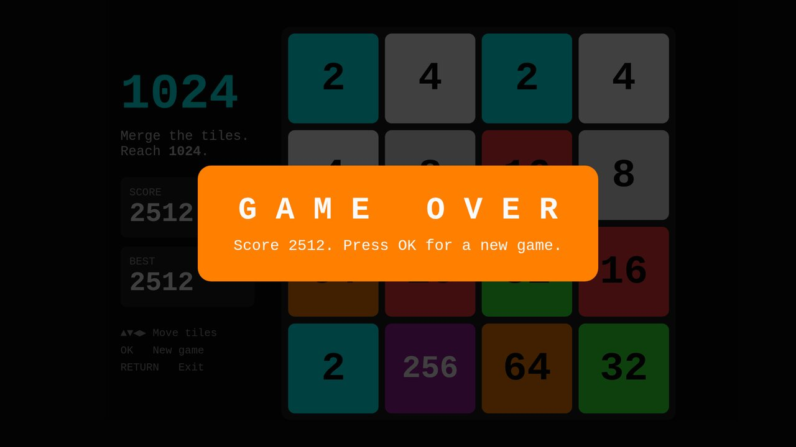
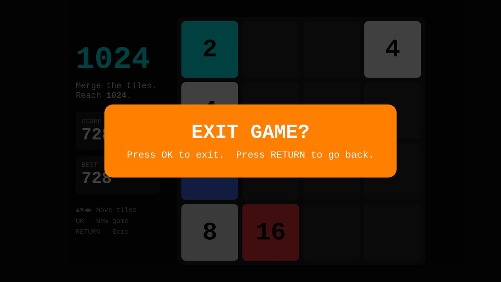

| Version | Date | Description | Author |
|---|---|---|---|
| 1.0 | 2026.11.20 | Initial version of the app description for Game 1024 v1.0.0 | Jelco Huijser |
Game 1024 is a single-player sliding-tile number puzzle, played with the remote control. Slide all tiles; equal tiles merge into one tile of double value. Reach 1024 to win.
The app has one main screen and three pop-ups that appear on top of it.
Every pop-up returns to the main game screen. After the exit pop-up the app closes (OK) or stays on the main screen (RETURN). There are no further menus, settings screens or sub pages.
No log-in, activation or payment is needed. Every step below can be tested without preparation.
| # | User action | App response |
|---|---|---|
| 1 | Start the app from the Smart Hub | Main screen appears with two random tiles (2 or 4) and score 0. Best score from earlier sessions is shown. |
| 2 | Press UP, DOWN, LEFT or RIGHT | All tiles slide in that direction. A merge sound plays when tiles combine; one new tile (2 or 4) appears. A key press that moves nothing is ignored. |
| 3 | Slide two equal tiles together | They merge into one tile of double value (colour fades to the new colour). The merged value is added to the score. |
| 4 | Create a 1024 tile | "YOU WIN!" pop-up and a cheer sound. OK continues the game; further play is possible without another win pop-up. |
| 5 | Play until the board is full and no tiles can merge | "GAME OVER" pop-up with the final score and a game-over sound. OK starts a new game. |
| 6 | Press OK during play | A new game starts immediately; the best score is kept. |
| 7 | Press RETURN | "EXIT GAME?" pop-up. OK closes the app, RETURN goes back to the game. |
Tip for testers: a game-over is reached quickly by pressing the four directions in an unplanned order (usually within a few minutes). Creating the 1024 tile takes skill and several minutes.
1Game title
2Score: sum of all merged tile values in this game
3Best: highest score reached on this TV
4Key help: arrows move tiles, OK new game, RETURN exit
5Game board: 4 × 4 grid. Tiles show 2, 4, 8 … 1024 and have a colour per value.

Shown once when a 1024 tile is created. OK continues playing.

Shown when no move is possible. Displays the score. OK starts a new game.

Shown on RETURN. OK closes the app, RETURN returns to the game.
| Item | Behaviour |
|---|---|
| Board | 4 × 4 grid; at the start two tiles (2 or 4) are placed on random empty cells |
| Move | All tiles slide as far as possible in the chosen direction (smooth animation, about 0.12 s). Equal neighbouring tiles merge once per move. If no tile moves, nothing happens. |
| New tile | After every move that changed the board, one tile appears on a random empty cell: 2 or 4, each with 50% chance |
| Score | Each merge adds the value of the new tile (4 + 4 = 8 adds 8) |
| Win | A 1024 tile triggers the win pop-up once per game; play can continue afterwards |
| Game over | No empty cell and no equal neighbours: game over pop-up |
| Best score | Saved automatically in local storage on the TV when it is beaten; shown at every start |
| Sound | Three short effects: merge, win, game over. No background music; volume follows the TV volume |
| Button | Action | Remarks |
|---|---|---|
| ENTER (OK) | Main screen: start a new game. Win pop-up: continue playing. Game over pop-up: new game. Exit pop-up: close the app. | |
| UP / DOWN / LEFT / RIGHT | Slide the tiles in that direction (no function while a pop-up is shown, except as listed) | |
| RETURN | Show the exit pop-up. In the exit pop-up: go back to the game. | Samsung Mandatory |
| EXIT | Close the app and show the broadcasting channel (handled by the system) | Samsung Mandatory |
| Ch. Up / Down | N/R | |
| RED / GREEN / YELLOW / BLUE | N/R | |
| Number keys, media keys | N/R | |
| Keyboard W A S D | Same as UP / LEFT / DOWN / RIGHT (convenience for keyboards) |
N/R = not responding. In a game app the exit pop-up is displayed on RETURN, as required.
| Application | |
|---|---|
| Type | Tizen web app (HTML5, CSS, JavaScript) |
| Application ID | Gm1024Tvz1.Game1024 |
| Version | 1.0.0 |
| Profile / platform | tv-samsung, required API version 5.0 |
| Screen | Landscape, laid out for 1920 × 1080, scales with the screen size |
| Package size | About 100 KB |
| Tested on | Tizen TV emulator |
| Data and permissions | |
|---|---|
| Tizen privileges | None requested |
| Network | None. The only file requests go to the sound files inside the app package. |
| Stored data | Best score, one number, in the app's local storage |
| Personal data | None collected or sent |
| Third-party SDKs | None |
Concept based on the well-known 2048 / 1024 sliding-tile puzzles. Sound effects originate from freesound.org.
| Items | Contents |
|---|---|
| How to change languages | Not applicable. The app has a single language (English) and does not change with the Smart Hub country or OSD language setting. Tile values are numbers, so they are language-neutral. |